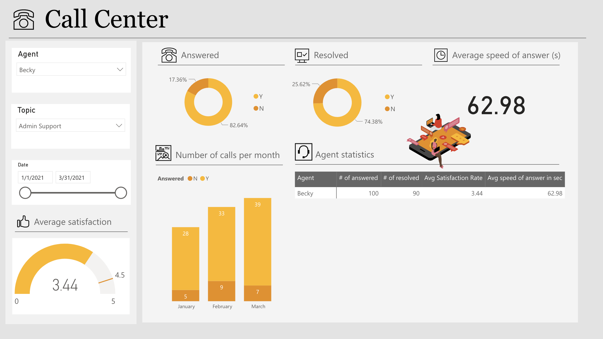

Visualizing Call Center Metrics Through an Interactive Power BI Dashboard
A data-driven dashboard that makes three months of call center operational data easy to scan, compare, and act on — supporting quick performance reviews at both the team and individual agent level.

Overview
This project is an interactive dashboard built in Power BI to analyze and visualize call center performance data over a three-month period (January–March 2021). The dashboard focuses on presenting key operational metrics in a clear and accessible way, supporting quick performance review and comparison across agents, topics, and time periods.
The core design goal was to compress a large volume of daily call data into a format that a call center manager could interpret in under a minute — identifying underperformance, tracking satisfaction trends, and drilling into specific agents or issue types without needing to run custom queries.
Key Metrics Visualized
The dashboard centers on five operational metrics that directly reflect call center health and customer experience quality:
-
Answered vs. unanswered calls
The ratio of answered to missed calls is a primary indicator of capacity and staffing alignment. Trends in unanswered calls over the three-month period surface periods where demand outpaced availability.
-
Resolved cases
Resolution rate — the proportion of calls that ended with the issue fully addressed — reflects both agent effectiveness and the complexity of incoming issues. This metric is tracked at the team and individual level.
-
Average speed of answer
How quickly calls are picked up correlates directly with customer satisfaction. The average speed of answer is trended over time to identify peak-load periods and inform scheduling decisions.
-
Monthly call volume
Volume trends over the January–March window reveal seasonal patterns and demand spikes that affect staffing needs. Month-over-month comparison is visualized directly to make trends immediately apparent.
-
Customer satisfaction rate
Post-call satisfaction ratings are aggregated and broken down by agent and topic category — making it possible to connect satisfaction outcomes to specific interaction types and team members.
Dashboard Features
The dashboard is built for operational use, not just reporting. Every feature was chosen to reduce the time between looking at data and knowing what to do with it.

-
Interactive slicers
Filter controls for agent, call topic, and date range allow managers to move quickly from team-level summary to individual performance detail. A single click on an agent name recalculates all metrics for that person across the full period.
-
KPI cards for high-level tracking
Prominent KPI cards sit above the charts to surface the most critical numbers immediately — answered call rate, average satisfaction, and overall resolution rate — without requiring the viewer to read a chart first.
-
Agent statistics table
A dedicated table summarizes each agent's performance across all key indicators in one row — making direct comparison fast and giving managers a structured view for performance conversations and coaching decisions.
Reflection
This project reinforced how much of dashboard design is about understanding who will use it and what decision they need to make. A call center manager's primary question is "where do I need to focus?" — and every layout decision was made to answer that as quickly as possible.
Speed of insight matters
Operational dashboards are often checked under time pressure. Leading with KPI cards before charts, and keeping the layout scannable from top-left to bottom-right, significantly reduces the time to the key takeaway.
Individual and team views serve different needs
Team-level trends inform scheduling and capacity planning. Agent-level detail informs coaching and individual performance reviews. A single dashboard that serves both requires deliberate hierarchy — summary first, drill-down second.
Choosing the right chart type
Volume trends, satisfaction distributions, and ratio comparisons each call for different visual encodings. Selecting the right chart type for each metric was as important as the data itself in making the dashboard interpretable at a glance.
Other Projects

Customer Risk Analysis
Analyzing churn patterns and risk factors with Power BI.

Workforce Analytics
Visualizing hiring, promotion, and representation trends.